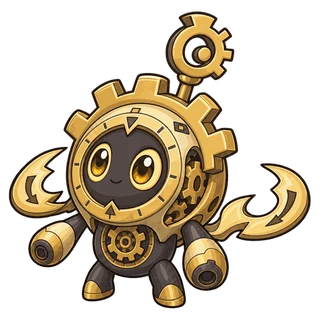
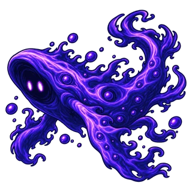
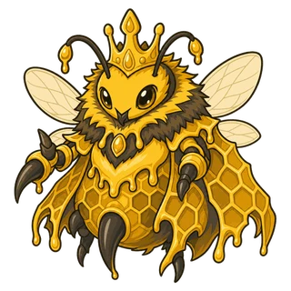
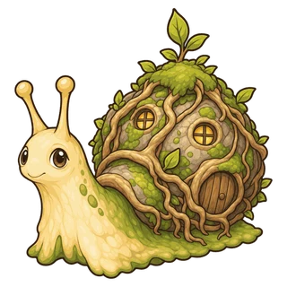
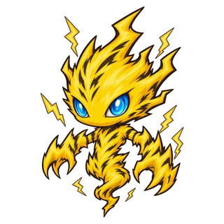
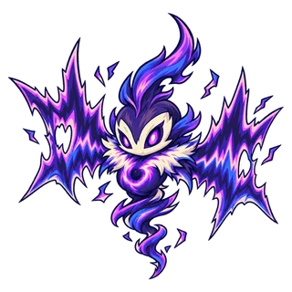

التعزيز
اسم عام يشمل كل تأثير مفيد يقع على الدمية.
تدخل فيه التأثيرات التي ترفع سرعة الهجوم أو الدفاع. ولا تزيله التأثيرات التي تزيل الإضعافات.
دمى مرتبطة

ترس الساعةالتأثيرات والمصطلحات التي تقابلها في المعركة. في أوصاف المهارات والمنشورات، مرّر المؤشر فوق كلمة تحتها خط منقّط أو المسها لترى شرحًا قصيرًا.
اسم عام يشمل كل تأثير مفيد يقع على الدمية.
تدخل فيه التأثيرات التي ترفع سرعة الهجوم أو الدفاع. ولا تزيله التأثيرات التي تزيل الإضعافات.

ترس الساعةحاجز يتلقى الضرر قبل الصحة.
يصدّ الضرر الجسدي والضرر السحري والضرر المستمر جميعًا، ويزول عند انتهاء مدته. يتلقى الدرع الضرر قبل أن يخفّضه الدفاع ومقاومة السحر. لا ينطبق الدفاع ومقاومة السحر إلا على الضرر الذي يتجاوز الدرع. تجتمع دروع المهارات المختلفة معًا، وإذا جاء درع من المهارة نفسها مرة أخرى حلّ الدرع الجديد محل القديم.
حالة تكون فيها الدمية محميّة بعلامة دمية أخرى.
إذا جاءها ضرر مباشر يكفي لإسقاطها فلا تتلقاه، وتتلقاه بدلًا منها الدمية التي وضعت العلامة. ولا يمنع ذلك السقوط بسبب الضرر المستمر.
عندما يصيب الدميةَ هجومٌ عادي، تردّ جزءًا من ضرره على الأعداء القريبين ضررًا سحريًا.
لا يُردّ ضرر المهارات ولا الضرر المستمر. ويُحسب المقدار المردود من الضرر قبل أن يخفّضه الدفاع والدروع. والأشواك تفعل الشيء نفسه بضرر جسدي، ولكن على المهاجم وحده.
عندما يصيب الدميةَ هجومٌ عادي، تُلحق بالمهاجم جزءًا من ضرره ضررًا جسديًا.
تعمل مثل الانعكاس، لكنها تصيب المهاجم وحده لا الأعداء القريبين. لا يفعّلها ضرر المهارات ولا الضرر المستمر. ويُحسب المقدار من الضرر قبل أن يخفّضه الدفاع والدروع.
حالة تختفي فيها الدمية من الملعب لحظات فلا يمكن إصابتها.
لا يصيبها الضرر المستمر خلال ذلك أيضًا، وتبقى الإضعافات التي عليها كما هي.

فويدرينحالة لا يمكن فيها إصابة الدمية وهي تتنقل تحت الأرض.
عندما تحفر نفقًا تزول كل الإضعافات التي عليها، ولا يصيبها الضرر المستمر أثناء تنقلها.
سقطت الدمية، وهي تنتظر لحظات قبل أن تنهض من جديد.
لا يمكن إصابتها أثناء الانتظار، ولا تُحسب ساقطة بعد، فلا يخسر فريقها.
حالة يزداد فيها الضرر الذي تُلحقه الدمية والضرر الذي تتلقاه.
عندما يسقط صاحب الكائنات المستدعاة تهيج الباقية منها، ويستمر هيجان كل منها حتى يسقط.

ملكة العسليعيد الصحة المفقودة.
لا يمكن أن يتجاوز الصحة القصوى، وما يزيد عليها يضيع. والدمية المصابة بخفض الشفاء تُشفى بقدر أقل.
اسم عام يشمل كل تأثير ضار يقع على الدمية.
تدخل فيه التأثيرات التي تخفض الإحصاءات أو تمنع الدمية من التصرف. والتأثير الذي يزيل الإضعافات يزيلها كلها دفعة واحدة، ويُبقي التعزيزات والدروع.
تتلقى الدمية ضررًا سحريًا كل ثانية لمدة محددة.
يتحدد مقدار الضرر لحظة الإصابة بالحرق، وإذا أصابتها به الدمية نفسها مرة أخرى بدأت المدة من جديد. ولأنه ضرر مستمر فلا يملأ المانا عند الإصابة به.
تُصاب الدمية بالسم فتتلقى ضررًا سحريًا كل ثانية لمدة محددة.
مع كل إصابة جديدة يُضاف سم جديد، ويُلحق كل سم أصابها ضرره على حدة. ولأنه ضرر مستمر فلا يملأ المانا عند الإصابة به.

حلزون السميزداد الضرر الجسدي الذي تتلقاه الدمية.
لا يتغير الضرر السحري. وإذا أصابتها به المهارة نفسها مرة أخرى بدأت المدة من جديد.

فولتيستقل سرعة الهجوم.
لا تتغير سرعة الحركة. الجليد الذي يصيب الدمية لقربها من دمية يحيط بها البرد يزول فور ابتعادها، أما الجليد الذي تُحدثه مهارة فيستمر طوال مدته المحددة.
تقل سرعة الهجوم وسرعة الحركة.
كلما أُصيبت به مرة أخرى ازداد بطؤها بقدر ذلك، وتنقضي مدة كل إصابة على حدة.
يقل الشفاء الذي تتلقاه الدمية.
إذا أُصيبت به مرة أخرى بدأت المدة من جديد، ولا يزداد الخفض.

نويزوينغلا تستطيع الدمية التحرك أو الهجوم أو استخدام مهارة.
تستمر المانا في الامتلاء. وإذا أُصيبت بالذهول مرة أخرى وهي مذهولة، يُعتمد الذهول الذي ينتهي لاحقًا.
تتجمّد الدمية فلا تستطيع التحرك أو الهجوم أو استخدام مهارة، ولا تكسب المانا.
إذا تجمّدت مرة أخرى وهي متجمّدة، يُعتمد التجمّد الذي ينتهي لاحقًا. وإذا تجمّدت وهي تجهّز مهارة فقد تُلغى تلك المهارة.
لا تهاجم الدمية إلا من استفزّها، ولا تستطيع خلال ذلك بدء مهارة جديدة.
تستمر المانا في الامتلاء، فتستخدم مهارتها عند انتهاء الاستفزاز. وينتهي الاستفزاز فورًا إذا سقطت الدمية التي استفزّتها.
عند بدء المعركة يستهدف الأعداء القريبون هذه الدمية أولًا.
بخلاف الاستفزاز، ليست له مدة محددة ولا يمنع المهارات. ويختار العدو هدفًا جديدًا عندما يحتاج إلى السير.
ضرر يخفّضه الدفاع.
معظم الهجمات العادية تُلحق ضررًا جسديًا. كلما ارتفع الدفاع قلّ الضرر المتلقّى، وعند دفاع 100 تتلقى الدمية نصفه فقط.
ضرر تخفّضه مقاومة السحر.
الضرر المستمر مثل الحرق والتسمم ضرر سحري أيضًا. وعند مقاومة سحر 100 تتلقى الدمية نصفه فقط، ومن الضرر السحري ما يتناسب مع قوة الهجوم.
ضرر يُلحقه هجوم عادي أو مهارة دفعة واحدة.
تكسب الدمية المصابة 10 من المانا. وكثير من المهارات السلبية لا يعمل إلا مع الضرر المباشر.
ضرر يصيب الدمية شيئًا فشيئًا مع مرور الوقت، مثل الحرق والتسمم.
لا يملأ المانا عند الإصابة به، ولا تعمل معه التأثيرات التي لا تعمل إلا مع الضرر المباشر.
يُلحق ضررًا أكبر بالعدو الذي لم يبقَ له إلا القليل من الصحة.
يتحدد بحسب صحة الهدف لحظة وصول الضرر، وليس تأثيرًا يُسقط الهدف فورًا.
تأثير ينتقل من الهدف المصاب إلى أقرب هدف تالٍ.
لا يعود إلى هدف أصابه من قبل، وكلما كثرت الانتقالات التي تأتي بعد هدف زاد المقدار الذي يناله. وإذا سقط الهدف التالي قبل أن يصل إليه، ينتقل إلى الهدف الذي يليه.
عندما تصل إلى 0 تسقط الدمية.
تزداد الصحة القصوى بنسبة 15% مع كل مستوى. ونسبة الصحة هي ما تمثله الصحة الحالية من الصحة القصوى بالنسبة المئوية.
مقدار ضرر الهجوم العادي، وأساس المهارات المكتوبة بصيغة «N% من قوة الهجوم».
تزداد بنسبة 15% مع كل مستوى.
أساس المهارات المكتوبة بصيغة «N% من قوة السحر».
تزداد بنسبة 15% مع كل مستوى.
يخفّض الضرر الجسدي المتلقّى.
عند دفاع 100 تتلقى الدمية نصف الضرر الجسدي فقط. ولا يتغير مع ارتفاع المستوى.
تخفّض الضرر السحري المتلقّى.
عند مقاومة سحر 100 تتلقى الدمية نصف الضرر السحري فقط. ولا تتغير مع ارتفاع المستوى.
عدد الهجمات العادية التي تقوم بها الدمية في الثانية.
مهما زادتها التأثيرات فلا تتجاوز 4 هجمات في الثانية. ولا تتغير مع ارتفاع المستوى.
السرعة التي تسير بها الدمية من خانة إلى أخرى.
لا تقوم الدمية بأي فعل آخر أثناء السير.
المسافة التي يبلغها الهجوم العادي: خانة واحدة تعني قريب المدى، وخانتان أو أكثر تعني بعيد المدى.
إذا كان الهدف خارج المدى، تسير الدمية حتى تبلغه. ولا تحجب الدمى الواقعة بينهما الهجوم. أما المسافة التي تبلغها المهارة فمكتوبة في وصف المهارة نفسه.
عندما تمتلئ تستخدم الدمية مهارتها النشطة.
تزداد 25 مع كل هجوم عادي، و10 كلما تلقت الدمية ضررًا مباشرًا. وتعود إلى 0 عند استخدام المهارة. ولا تمتلئ بأي طريقة ما دامت الدمية متجمّدة، أو ما دام وصف المهارة يذكر أنها لا تكسب المانا.
خانة سداسية واحدة من الملعب. تُقاس المسافات والنطاقات بعدد الخانات.
تُقاس المسافة بين خانتين بعدد الخانات التي يجب عبورها للوصول. يبلغ عرض الملعب 7 خانات وطوله 8 خانات، ولكل فريق 4 صفوف. ولا تقف في الخانة الواحدة إلا دمية واحدة.
الخانات التي يبلغها التأثير. «ضمن N خانة» تعني كل الخانات حتى N خانة من المركز.
«ضمن 1 خانة» تعني الخانات الست المحيطة. ويختلف من مهارة إلى أخرى ما إذا كانت الدمية التي في المركز مشمولة، ويُحدَّد النطاق لحظة وصول التأثير.
نطاق يتسع من نقطة واحدة في اتجاه واحد.
يُحدَّد طوله بعدد الخانات، وعرضه بالزاوية التي ينفتح بها على كل جانب من خطه الأوسط. ويختلف من مهارة إلى أخرى المكان الذي يبدأ منه والاتجاه الذي يتسع فيه.
نطاق يمتد مستقيمًا إلى الأمام حتى طرف الملعب.
يتحدد اتجاهه عند بدء التجهيز، فيمكن تفاديه بالتنحي جانبًا في أثناء ذلك.
من بين الخانات الفارغة المجاورة للهدف، الخانة الأبعد عن الدمية نفسها.
المهارات التي تنقل الدمية إلى خلف الهدف تنقلها إلى هذه الخانة لتهاجم منها.
يدفع الأعداء بعيدًا عنه خانةً بعد خانة.
إذا كانت الخانة التي سيُدفع إليها العدو مشغولة أو خارج الملعب فلا يُدفع. والدمية المدفوعة تنقطع خطوتها التي كانت تخطوها.
بقعة تبقى على الأرض وتؤثر فيما حولها لمدة محددة.
يستمر طوال مدته المتبقية حتى لو سقطت الدمية التي أنشأته.
يبقى في الخانات التي تغادرها الدمية، ويُلحق الضرر بالأعداء الواقفين فيها.
لأنه ضرر مستمر فلا يمنح المانا، ولا يصيب بالتسمم. وإذا تُرك في الخانة نفسها مرة أخرى بدأت مدته من جديد، ولا يزول حتى لو سقطت الدمية التي تركته.
الهجوم الذي تواصل به الدمية ضرب هدف ضمن مداها، بحسب سرعة هجومها.
يملأ كل هجوم 25 من المانا. ومعظمه ضرر جسدي، ويُلحق ضررًا يساوي قوة الهجوم.
مهارة الدمية التي تستخدمها عندما تمتلئ المانا.
بعد استخدامها تعود المانا إلى 0، ويجب أن تمتلئ من جديد لاستخدامها مرة أخرى. ولا تستطيع الدمية المستفَزّة بدء استخدامها.
وضعية تتخذها الدمية أثناء استخدام مهارة، ولا تكسب المانا خلالها.
حتى تنتهي الوضعية لا تمنحها الهجمات العادية ولا الضرر الذي تتلقاه أي مانا. ويذكر وصف المهارة متى تنتهي، مثل «لا يكسب المانا حتى ينتهي الاستفزاز». بعض الوضعيات توقف الهجمات العادية أيضًا، ولأن الوضعية ليست تعزيزًا ولا إضعافًا فلا شيء يزيلها.
قدرة تعمل دائمًا دون أن تُستخدم، أو تعمل من تلقاء نفسها في لحظات محددة.
إذا لم تكن للدمية المتطوّرة مهارة سلبية خاصة بها، فإنها تستخدم المهارة السلبية للدمية التي تطوّرت منها.
قدرة خاصة لا تملكها إلا هذه الدمية بحكم سلسلة تطوّرها.
قد يتطلب عملها امتلاك دمية أخرى.
العدو الذي تهاجمه الدمية بهجومها العادي الآن.
عندما تحتاج إلى السير تختار أقرب عدو من جديد. وإذا استُفزّت أصبحت الدمية التي استفزّتها هدفها.
التأثير نفسه حين يقع أكثر من مرة.
يختلف ما يحدث عند التكرار من تأثير إلى آخر. فمعظم التأثيرات تبدأ مدتها من جديد عند تكرارها، أما التأثيرات التي تتراكم طبقاتٍ منفصلة فيذكر وصفها أنها تتراكم.
الوقت الذي يجب انتظاره بعد العمل مرة واحدة قبل أن يمكن العمل من جديد.
إشارة تتركها مهارة على دمية، ويختلف عملها من مهارة إلى أخرى.
العلامة التي توضع على عدو تزيد الضرر التالي الذي يتلقاه، والعلامة التي توضع على حليف تحميه.
ما تستدعيه الدمية أو تصنعه وتضعه في الملعب.
يقاتل بمستوى صاحبه، لكنه لا يُحسب في الفوز أو الخسارة ولا يكسب المانا. ولا تختاره تأثيرات الحلفاء التي تستهدف عددًا محدودًا.
في آخر 10 ث من المباراة يزداد كل ضرر كل ثانية وتتسارع الهجمات.
من الثانية 20 يزداد الضرر المتلقّى بنسبة 60% كل ثانية، ويصبح معدل الهجمات العادية 1.5 ضعف ما كان عليه.
إذا بقيت دمى لدى الفريقين بعد مرور 30 ث، فالنتيجة تعادل مهما كانت الصحة المتبقية.
وتكون النتيجة تعادلًا أيضًا إذا سقطت آخر دمية لدى كل فريق في اللحظة نفسها. ولا تُحتسب الكائنات المستدعاة الباقية.
دور للدمى ذات الصحة والدفاع العاليين، تقف في المقدمة وتتلقى هجمات العدو.
دور للدمى التي تقاتل من قرب وتُلحق ضررًا بلا انقطاع.
دور للدمى التي تُحدث بمهاراتها ضررًا كبيرًا أو تأثيرات قوية.
دور للدمى التي تتسلل إلى خلف العدو لتستهدف الأعداء الضعفاء.
دور للدمى التي تشفي الحلفاء أو تحميهم أو تساعدهم.
درجة الدمية، وترتفع عند الحصول على الدمية نفسها مرة أخرى.
مع كل مستوى تزداد الصحة وقوة الهجوم وقوة السحر بنسبة 15%، حتى Lv.11 كحد أقصى. أما الدفاع ومقاومة السحر وسرعة الهجوم والمدى والمانا فلا تتغير.
الشكل التالي للدمية.
إذا كانت لديك الدمية المتطوّرة، يمكنك عند تكوين الفريق إرسالها بدلًا من الدمية التي تتطوّر منها. وتقاتل الدمية المتطوّرة بإحصاءاتها ومهاراتها الخاصة، ولا يضم الفريق إلا دمية واحدة من كل سلسلة تطوّر.
فترة تدخل فيها دمى جديدة، ولكل موسم ترتيب خاص به.